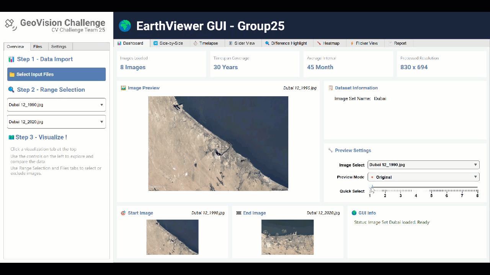

Computer Vision
GeoVision
A MATLAB application for aligning satellite image sequences and turning visual differences into interpretable evidence of environmental change.
Apr — Jul 2025MATLAB · Image Processing · GUI

Overview
The application registers satellite images captured at different times and provides several views for comparison, including timelapse playback, highlighted regions, heatmaps, and an interactive curtain slider.
Highlights
- Automatic image registration
- Multiple change-visualization modes
- Interactive MATLAB interface